- 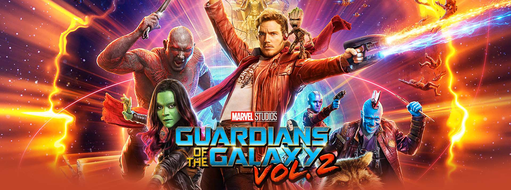

-

Guardianes de la galaxia Vol.2
2017
Una poderosa raza alienígena contrata a los Guardianes para que protejan sus valiosas baterías de energía, pero cuando Rocket las roba, los alienígenas envían a sus tropas de combate a vengarse de los Guardianes...
-
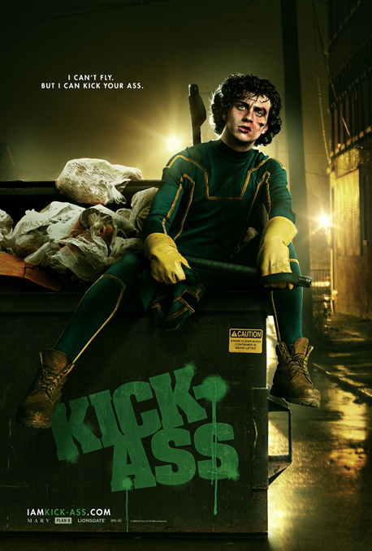
Kick Ass
2010
A pesar de la falta completa de poderes extraordinarios, un adolescente se reinventa a sí mismo como un superhéroe y, junto con un equipo padre/hija de vigilantes, se enfrentan a un jefe criminal.
-
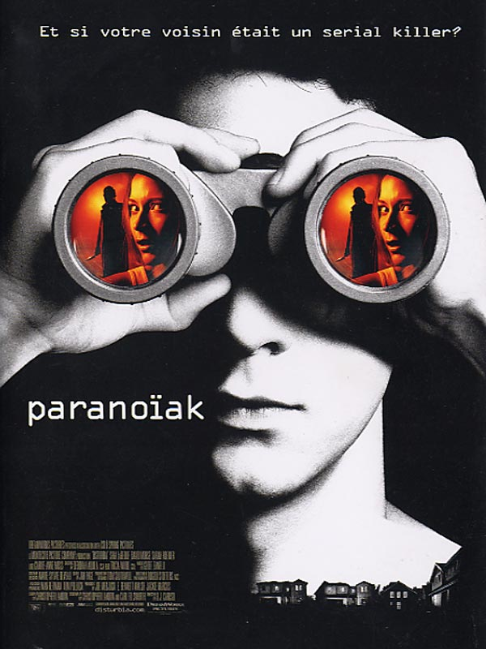
Paranoia
2007
Desde la muerte de su padre, el joven Kale se ha alejado y ha entristecido más, hasta que debe enfrentarse a un arresto domiciliario. Al sentirse encerrado, él voltea su atención a espiar a sus vecinos, sospechando que uno de ellos...
-
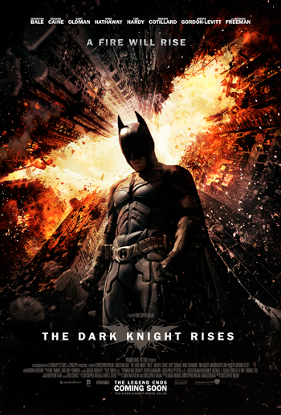
El caballero de la noche
2008
Batman tiene que mantener el equilibrio entre el heroísmo y el vigilantismo para pelear contra un vil criminal conocido como el Guasón, que sumiría a Ciudad Gótica en la anarquía.
-
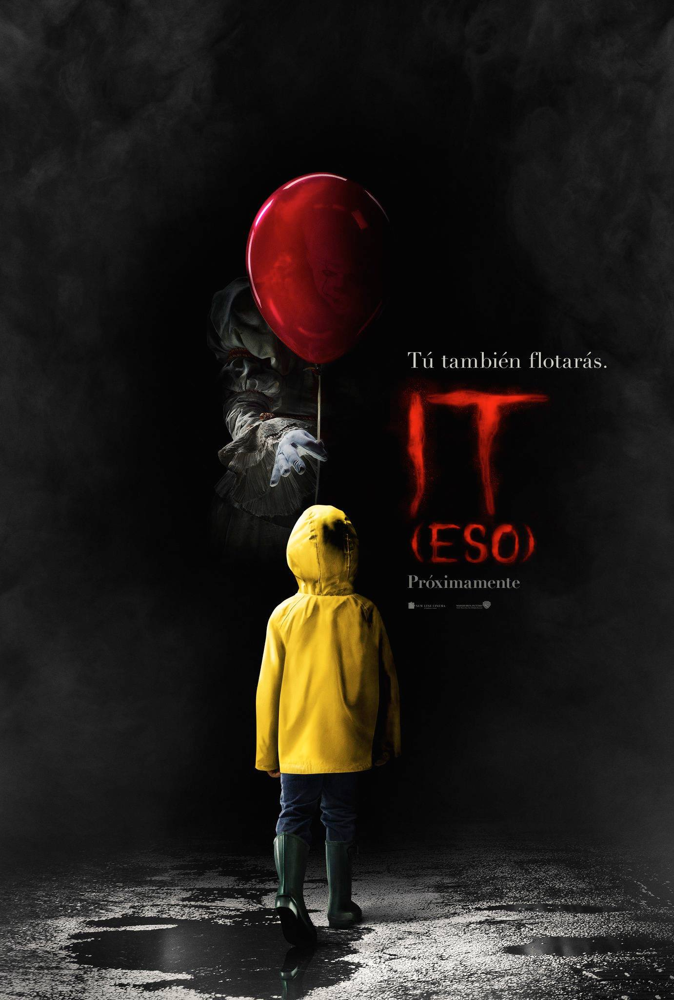
IT
2017
Varios niños de una pequeña ciudad del estado de Maine se alían para combatir a una entidad diabólica que adopta la forma de un payaso y desde hace mucho tiempo emerge cada 27 años para saciarse de sangre infantil.
-
Siempre a tu lado
2009
Un perro fiel llamado Hachiko acompaña cada mañana a su amo a la estación de tren y regresa cada tarde para darle la bienvenida después del trabajo. Sin embargo, esta rutina se ve rota por una desgracia.
-

Matrix
1999
Un experto en computadoras descubre que su mundo es una simulación computarizada creada por malvada ciberinteligencia.
-
Deadpool 2
2018
Después de sobrevivir a un ataque bovino casi mortal, un chef desfigurado de cafetería (Wade Wilson) lucha por cumplir su sueño de convertirse en el barman más caliente de Mayberry mientras aprende a lidiar con su perdido sentido del gusto...
-
Detras de las paredes
2011
El publicista Will Atenton (Daniel Craig) deja un lucrativo trabajo en Nueva York para mudarse con su esposa, Libby (Rachel Weisz), y sus hijas a una pintoresca ciudad de Nueva Inglaterra. Sin embargo, mientras se adaptan a su casa...
-
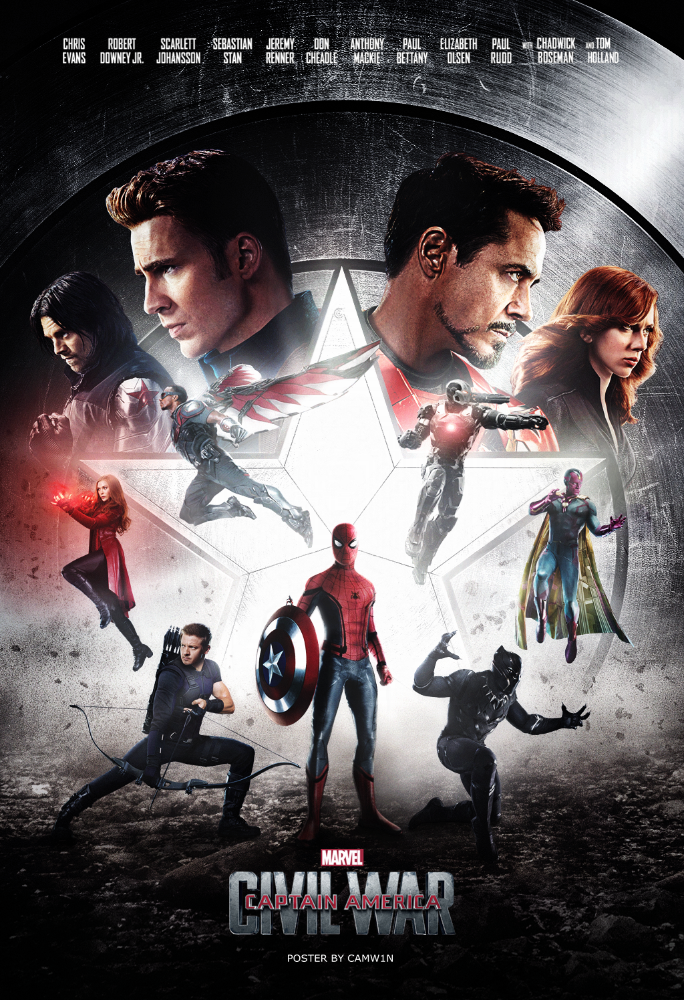
Civil war
2016
Después de que otro incidente internacional, en el que se ven envueltos los Vengadores, produzca daños colaterales, la presión política obliga a poner en marcha un sistema para depurar responsabilidades.
-
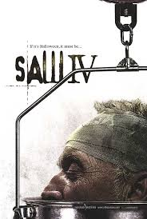
Saw 4
2007
Un oficial sólo tiene 90 minutos para salvar a su amigo, un comandante de SWAT, de una serie de trampas dementes.
-
La teoria del todo
2014
Durante los años sesenta, el estudiante de la Universidad de Cambridge y futuro físico Stephen Hawking se enamora de su compañera Jane Wilde. A pesar del diagnóstico de una enfermedad devastadora, él y abren nuevos caminos científicos.
-

Ex machina
2014
Un joven programador que trabaja en una compañía de Internet es elegido para evaluar las capacidades y la conciencia de una hermosa y sofisticada robot.
-
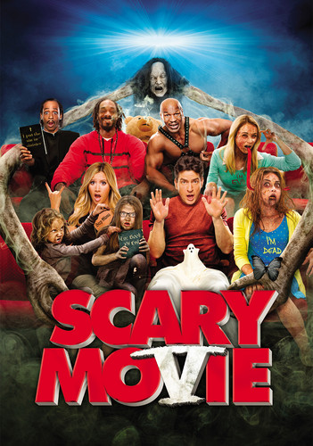
Scary movie 5
2013
Actividades extrañas se presentan luego que un marido y su esposa llevan a su bebe recién nacido a casa. Ellos descubren que un demonio nefasto acecha a su familia, consultan a expertos e instalan numerosas cámaras para deshacerse del espíritu.
-
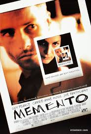
Memento
2000
Un hombre con problemas de memoria usa notas, fotografías y tatuajes para hallar al asesino de su esposa.
-
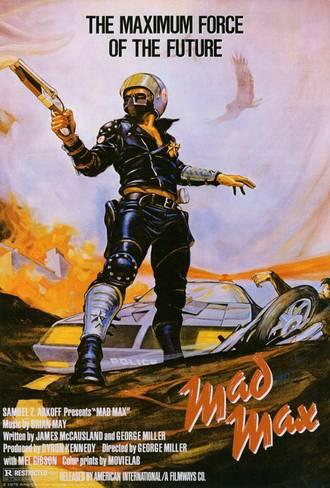
Mad max
2015
Aunque está decidido a vagar solo por el páramo post-apocalíptico, Mad Max se une a Furiosa, una comandante fugitiva, y su banda, quienes están tratando de escapar de un señor de la guerra.
-
Anabelle 2
2017
Varios años después del trágico fallecimiento de su hija, un juguetero que crea muñecas y su mujer alojan en su casa a una enfermera y un grupo de chicas; pero la muñeca Annabelle, poseída por un espíritu, comienza a atacarlas.
-
Bajo la misma estrella
2014
Dos adolescentes pacientes de cáncer inician un viaje para reafirmar sus vidas y visitar a un escritor solitario en Ámsterdam.
-

Gravity
2013
La doctora Ryan Stone es una ingeniera médica en su primera misión espacial. Su comandante es el veterano Matt Kowalsky, en su último viaje antes de retirarse.Una caminata espacial de rutina se convierte en un desastre y la nave queda destruida...
-
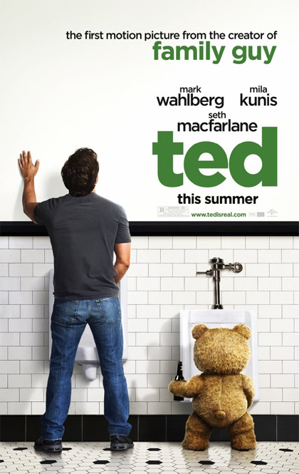
Ted
2012
Cuando John Bennett (Mark Wahlberg) era un niño pequeño, pidió el deseo de que Ted (Seth MacFarlane), su querido oso de peluche, cobrara vida. Treinta años más tarde, Ted continúa siendo el compañero de John, ante el disgusto de Lori...
-
Gorrion rojo
2018
Dominika, una antigua bailarina se convierte en agente secreto del servicio ruso, pero la dureza del entrenamiento le pasa factura. Su primera misión le involucra con un agente de la CIA junto al que cae en una espiral de atracción y engaño.
-
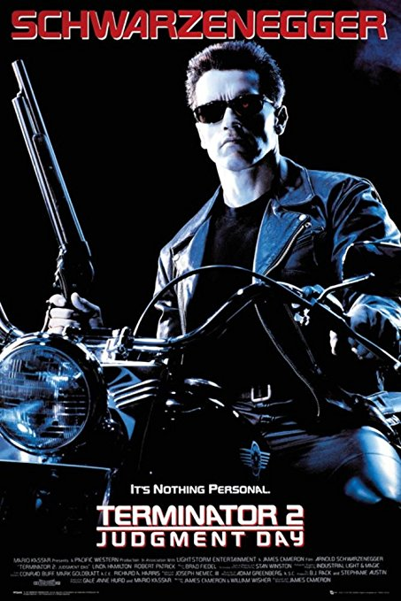
Terminator 2
1991
Dos androides del futuro intentan apoderarse de un adolescente que se convertirá en el salvador de la Tierra.
-
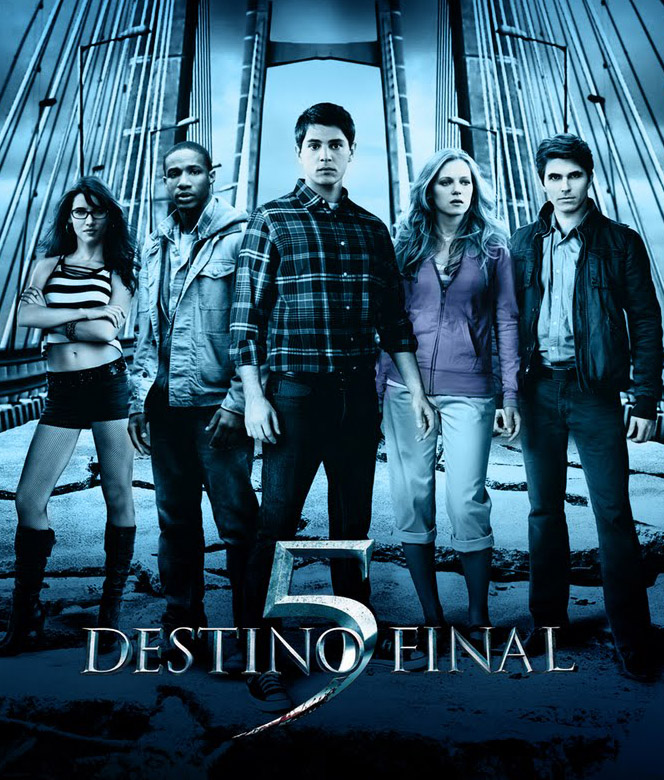
Destino final 5
2011
La premonición de un hombre salva a varias personas del fatal colapso de un puente y varias almas desafortunadas descubren que la muerte no puede ser engañada.
-
Cincuenta sombras liberadas
2018
El millonario Christian Grey y su nueva esposa, Anastasia, disfrutan la vida al máximo sin sospechar que una amenaza terrible se cierne sobre ellos.